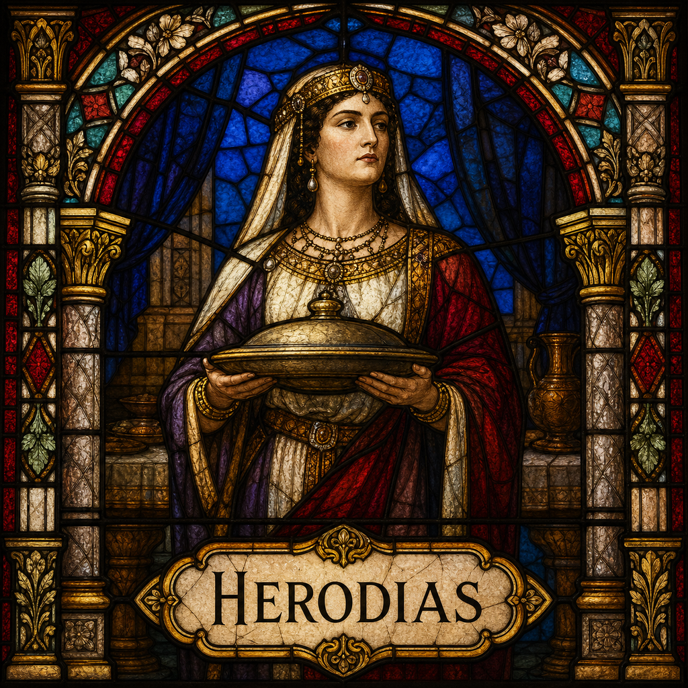

Herodias (F)
First named in Matthew 14:3-11
Herodias, granddaughter of Herod the Great, was first married to Herod Philip (referred to in the Gospels simply as Philip), but left him to marry his brother Herod Antipas instead, a union John the Baptist publicly denounced as unlawful, since Philip was still living: 'It is not lawful for you to have her' (Mark 6:17-18). Herodias resented John bitterly for this and 'wanted to put him to death,' but could not, because Herod himself protected John, respecting him as a righteous and holy man even while keeping him imprisoned (6:19-20). Her opportunity came at Herod's birthday banquet, when her daughter danced before Herod and his guests and pleased him so much that he swore an oath to give her whatever she asked, up to half his kingdom (6:21-23). The girl went out and asked her mother what to request, and Herodias answered immediately and specifically: 'the head of John the Baptist' (6:24). Her daughter returned at once and demanded it be brought on a platter, and Herod, though grieved, honored his rash oath rather than be shamed before his guests, sending an executioner to behead John in prison (6:25-27). Herodias's calculated use of the banquet's public pressure and her own daughter's request to accomplish what Herod's own conscience had been resisting stands as Scripture's clearest picture of manipulation aimed squarely at securing personal revenge.
Thought for Today
Herodias’s story teaches us about manipulation for revenge; may we look to Jesus, whose grace and truth never fail.
References: Matthew 14:3-11; Mark 6:17-28; Luke 3:19